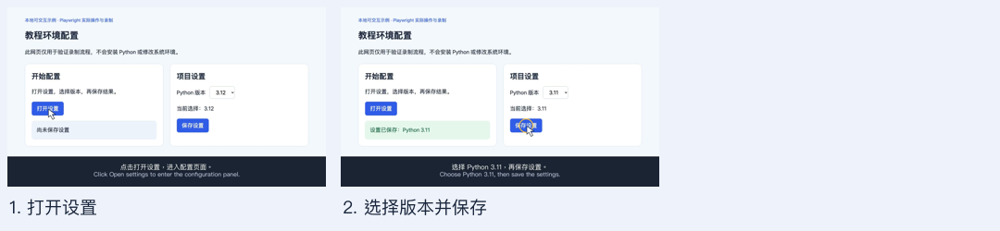

1. 打开设置
0.00–3.70 s
旁白：点击打开设置，进入配置页面。
0.03–2.75 s
点击打开设置，进入配置页面。
Click Open settings to enter the configuration panel.
点击打开设置，进入配置页面。
Click Open settings to enter the configuration panel.
自动检查：automatic_checks_passed；人工检查：待确认。自动通过不表示声音、术语或操作含义已经验收。
勾选和备注保留在当前页面；下载文件后才能作为检查记录保存，不会自动发给助手。

0.00–3.70 s
旁白：点击打开设置，进入配置页面。
3.70–7.30 s
旁白：选择 Python 三点一一，再保存设置。